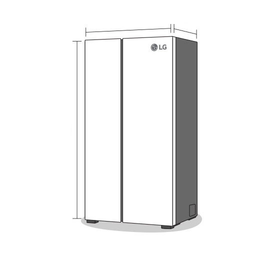
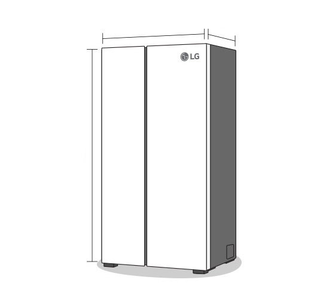
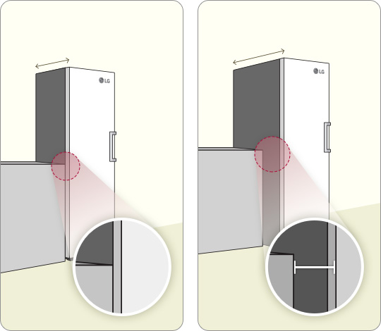
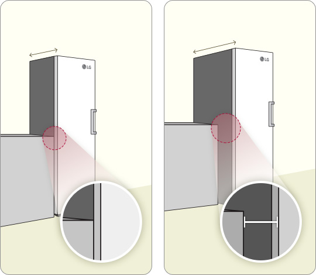

Puedes seleccionar multiples opciones.
Ningún modelo coincide al seleccionar esta opción. Elija otra opción y continúe con el Buscador.
- Has elegido un
- Prioriza
- Te recomendamos
- frigoríficos con


Este formato ha ganado en popularidad en los últimos años. Su distribución con frigorífico en la parte superior y congelador en la mitad inferior da una gran sensación de amplitud al abrirlo y está pensada para agacharse menos y mejorar el confort.


El frigorífico Americano o side-by-side te dotará de gran capacidad de almacenamiento tanto en la parte de frigorífico (derecha) como en la de congelador (izquierda)
El frigorífico más vendido en España y preferido en aquellas cocinas que cuentan con un espacio más limitado y buscan contar con el mayor almacenamiento en el menor espacio.

La capacidad de almacenamiento queda principalmente destinada al frigorífico, con un congelador de tamaño reducido en la parte superior. Práctico para familias o segundas residencias.
Si buscas gran capacidad y almacenamiento independiente esta es tu mejor opción.
Si estás limitado de espacio, gana en capacidad de frigorífico en tu cocina y sitúa tu congelador en otra estancia ( lavadero, despensa, terraza…) Ganas capacidad en frígorífico y en cogelador.


Profundidad de la encimera
Fondo estándar
 


Profundidad de la encimera
Fondo estándar


 

Profundidad de la encimera
Fondo estándar


-
NegroEl negro nunca pasa de moda
Las superficies negras mate son menos propensas a dejar huellas por el uso frecuente.
-
BlancoEl blanco siempre es una opción con clase. Limpio, fresco y fácil de mantener
Tu nuevo frigorífico combinará bien con diversos estilos de decoración y materiales.
-
Acero inoxidableUn tono elegante que combina sin esfuerzo con diversos estilos de hogar
Su aspecto elegante es agradable a la vista y requiere poco mantenimiento.
-
PlateadoUn color estable que combina bien con cualquier interior, ambiente o aspecto de la cocina
Los colores plateados combinan bien con varios colores y estilos de interior.